Representations and characterizations¶
- Truth Table
- Trace representation
- Polynomials in ANF
- ANF table
- Characteristic Function
- Walsh Spectrum
- Linear Profile
- Differential Profile
- Autocorrelation Spectrum
- Affine function and affine equivalence
- Cycle structure, fixed points and negated fixed points
- Permutation matrix
- DES representations
- Auxiliary functions
- Summary
This chapter presents a review of theory relevant to the study of the typical forms of Vector Boolean function representations and chacterizations. We will consider representations those that uniquely represents a Vector Boolean function. Characterizations does not uniquely determine the Vector Boolean function in contrast to the previous matrices but provide some useful information in the context of cryptography.
Representations included in this chapter are the Truth Table (TT), the polynomials in Algebraic Normal Form (Pol) and ANF Table (ANF), the Image (Char), Component functions Truth Table(LTT), Sequence vectors of Component functions CTT, the Trace Representation (Trace) and Affine function Representation. A definition for all these representations are given and the relationships among them and their various properties are also discussed.
Characterizations such as Linear Profile (LP), Differential Profile (DP), Autocorrelation Spectrum (AC), Linear Structures (LS) are introduced. A definition for all these represen- tations are given and the relationships among them and the above representations and their various properties are also discussed.
The basic concepts of linear and differential cryptanalysis are introduced in terms of the Linear Profile and Differential Profile, together with other properties related with these attacks, such as: linear potential, differential potential, linear or differential relations associated with a specific value.
Affine equivalence analysis of Boolean functions by means of VBF library is described. It is showed how to obtain the Frequency distribution of the absolute values of the Walsh Spectrum and of the Autocorrelation Spectrum.
It is possible to check randomness of a Vector Boolean function outputs with VBF by means of its cycle structure, and the analysis of the presence of fixed points or negated fixed points.
Finally, some other representations useful in block ciphers are described such as the Permutation Vector (Per), Expansion and Compression DES permutations and DES-like S-box representations.
The description of each representation and characterization is complemented with the description of the methods in VBF related to them. Most of the member functions of V BF have an in-line definition, for instance: void TT(NTL::mat_GF2& X, VBF& F) is also defined as inline NTL::mat_GF2 TT(VBF& F).
The figure summarizes the relationships among the different representations.

The representations which are Boolean matrices are coloured in red, those which are Integer matrices are coloured in blue, those that are vector of integers are coloured in yellow and those which are polynomial are coloured in green.
Truth Table¶
Description¶
A Vector Boolean function  can be uniquely represented by its Truth Table which is a matrix with
can be uniquely represented by its Truth Table which is a matrix with  rows and m columns whose elements are the values of F taken on all possible vector of
rows and m columns whose elements are the values of F taken on all possible vector of  ordered lexicographically.
ordered lexicographically.
Let , if we take into account the one-to-one mapping of onto the set of integers, we are able to define any vector Boolean function by the corresponding set of values:

The matrix with rows and  columns will be referred as the Truth Table of F and will be generally written as
columns will be referred as the Truth Table of F and will be generally written as  :
:
![\matr{TT}_F=\begin{bmatrix} f_1(\boldsymbol{\alpha_0})&\dots&f_{m}(\boldsymbol{\alpha_0}) \\
f_1(\boldsymbol{\alpha_1})&\dots&f_{m}(\boldsymbol{\alpha_1}) \\
\hdotsfor[2]{3} \\
f_1(\boldsymbol{\alpha_{2^n-1}})&\dots&f_{m}(\boldsymbol{\alpha_{2^n-1}}) \end{bmatrix}](images/math/41e75fe7442fa972c2313ae3c17ed8fe55b1f261.png)
each  is a vector whose decimal equivalent is
is a vector whose decimal equivalent is
 , and all
the vectors of can be listed so that
, and all
the vectors of can be listed so that  .
.
As a total order is defined over the assignments (inputs) of the Vector Boolean Function, the Truth Table can be uniquely represented by this matrix. Any function F can be uniquely described by its Truth Table  (or by the Truth Tables of its coordinate functions
(or by the Truth Tables of its coordinate functions  ) and it holds that:
) and it holds that:

is an isomorphism between the vector spaces  and
and  , so that
, so that  .
.
The Truth Table for an n-variable Boolean function f should be in
lexicographical form, i.e.,  . Since the
Truth Table length might be too large, we represent it in hexadecimal
rather than in binary notation. The hexadecimal Truth Table is obtained
by replacing each four bits by their corresponding
hexadecimal form. For instance, to enter
. Since the
Truth Table length might be too large, we represent it in hexadecimal
rather than in binary notation. The hexadecimal Truth Table is obtained
by replacing each four bits by their corresponding
hexadecimal form. For instance, to enter  one should just write
one should just write  .
.
The distance between two Vector Boolean functions  is defined as the number of bits that are different in their respective Truth Tables:
is defined as the number of bits that are different in their respective Truth Tables:

where  is the Hamming distance between the two vectors
is the Hamming distance between the two vectors  .
.
The weight of a Vector Boolean function is equal to the distance between F and the corresponding zero Vector Boolean function  where
where  .
.
In order to obtain certain characterizations (such as Autocorrelation Spectrum), it is important to take into account two additional representations related to the Truth Table:  and
and  .
.
We will denote by of the matrix whose columns are the Truth Tables of the  component functions of F. We will denote by of F the matrix whose columns are the sequence vectors of the component functions of F (Sometimes it is called the Polarity Truth Table).
component functions of F. We will denote by of F the matrix whose columns are the sequence vectors of the component functions of F (Sometimes it is called the Polarity Truth Table).
Library¶
A VBF class can be initialized by a Boolean Matrix representing the Truth Table with the following method:
void puttt(const NTL::mat_GF2& T)
To obtain the Truth Table of a Vector Boolean function the following method must be used:
void TT(NTL::mat_GF2& X, VBF& F)
A VBF class can be initialized by a collection of strings separated by carriage returns defined by s with the following method:
void putHexTT(istream& s)
Each row must be the hexadecimal representation of the Truth Table of the coordinate functions of a Vector Boolean function. To obtain the Truth Table in hexadecimal representation the following method must be used:
void getHexTT(ostream& s)
Analogously a VBF class can be initialized by a collecting of strings with binary representation of the Truth Table of coordinate functions:
void putBinTT(istream& s)
To obtain its Truth Table in binary representation the following method must be used:
void getBinTT(ostream& s)
A VBF class can be initialized by a Boolean vector representing the decimal representation of the Truth Table of a Vector Boolean Function defined by a vector of outputs in lexicographic order, called d, and knowing the number of component Boolean functions m:
void putDecTT(const NTL::vec_long& d,const long& m)
To obtain the Truth Table in decimal representation the following method must be used:
NTL::vec_long getDecTT() const
To obtain the weight of a Vector Boolean function F the following method must be used:
void weight(long& w, VBF& F)
A VBF class can be initialized by a Boolean Matrix representing the Truth Table of their component functions with the following method:
void putltt(const NTL::mat_GF2& L)
To obtain the Truth Table of the component functions of a Vector Boolean function the following method must be used:
void LTT(NTL::mat_GF2& X, VBF& F)
A VBF class can be initialized by a Boolean Matrix representing its Polarity Truth Table with the following method:
void putctt(const NTL::mat_ZZ& C)
To obtain the Polarity Truth Table of a Vector Boolean function the following method must be used:
void CTT(NTL::mat_ZZ& X, VBF& F)
Example¶
The Truth Table of the NibbleSub S-box is the following:
[[1 1 1 0]
[0 1 0 0]
[1 1 0 1]
[0 0 0 1]
[0 0 1 0]
[1 1 1 1]
[1 0 1 1]
[1 0 0 0]
[0 0 1 1]
[1 0 1 0]
[0 1 1 0]
[1 1 0 0]
[0 1 0 1]
[1 0 0 1]
[0 0 0 0]
[0 1 1 1]
]
If we use a file with this matrix as the input of the following program, we can obtain its hexadecimal, binary and decimal representation, as well as the Truth Tables of the components functions and its Polarity Truth Table.
#include <iostream>
#include <fstream>
#include "VBF.h"
int main(int argc, char *argv[])
{
using namespace VBFNS;
VBF F;
NTL::mat_GF2 T;
ifstream input(argv[1]);
if(!input)
{
cerr << "Error opening " << argv[1] << endl;
return 0;
}
input >> T;
F.puttt(T);
input.close();
cout << "The hexadecimal representation is: " << endl;
F.getHexTT(cout);
cout << endl << "The binary representation is: " << endl;
F.getBinTT(cout);
cout << endl << "The decimal representation is: " << endl
<< F.getDecTT() << endl;
cout << endl << "The Truth Table of the component functions is: "
<< endl << LTT(F) << endl;
cout << endl << "The Polarity Truth Table is: "
<< endl << CTT(F) << endl;
return 0;
}
The output of this program would be:
The hexadecimal representation is:
a754
e439
8ee1
368d
The binary representation is:
1010011101010100
1110010000111001
1000111011100001
0011011010001101
The decimal representation is:
[14 4 13 1 2 15 11 8 3 10 6 12 5 9 0 7]
The Truth Table of the component functions is:
[[0 0 1 1 1 1 0 0 1 1 0 0 0 0 1 1]
[0 0 0 0 1 1 1 1 0 0 0 0 1 1 1 1]
[0 1 0 1 1 0 1 0 1 0 1 0 0 1 0 1]
[0 1 0 1 0 1 0 1 0 1 0 1 0 1 0 1]
[0 0 1 1 0 0 1 1 0 0 1 1 0 0 1 1]
[0 1 1 0 1 0 0 1 1 0 0 1 0 1 1 0]
[0 1 1 0 0 1 1 0 1 0 0 1 1 0 0 1]
[0 0 0 0 0 0 0 0 1 1 1 1 1 1 1 1]
[0 1 1 0 0 1 1 0 0 1 1 0 0 1 1 0]
[0 0 1 1 0 0 1 1 1 1 0 0 1 1 0 0]
[0 0 1 1 1 1 0 0 0 0 1 1 1 1 0 0]
[0 0 0 0 1 1 1 1 1 1 1 1 0 0 0 0]
[0 1 0 1 1 0 1 0 0 1 0 1 1 0 1 0]
[0 1 0 1 0 1 0 1 1 0 1 0 1 0 1 0]
[0 0 0 0 0 0 0 0 0 0 0 0 0 0 0 0]
[0 1 1 0 1 0 0 1 0 1 1 0 1 0 0 1]
]
The Polarity Truth Table is:
[[1 1 -1 -1 -1 -1 1 1 -1 -1 1 1 1 1 -1 -1]
[1 1 1 1 -1 -1 -1 -1 1 1 1 1 -1 -1 -1 -1]
[1 -1 1 -1 -1 1 -1 1 -1 1 -1 1 1 -1 1 -1]
[1 -1 1 -1 1 -1 1 -1 1 -1 1 -1 1 -1 1 -1]
[1 1 -1 -1 1 1 -1 -1 1 1 -1 -1 1 1 -1 -1]
[1 -1 -1 1 -1 1 1 -1 -1 1 1 -1 1 -1 -1 1]
[1 -1 -1 1 1 -1 -1 1 -1 1 1 -1 -1 1 1 -1]
[1 1 1 1 1 1 1 1 -1 -1 -1 -1 -1 -1 -1 -1]
[1 -1 -1 1 1 -1 -1 1 1 -1 -1 1 1 -1 -1 1]
[1 1 -1 -1 1 1 -1 -1 -1 -1 1 1 -1 -1 1 1]
[1 1 -1 -1 -1 -1 1 1 1 1 -1 -1 -1 -1 1 1]
[1 1 1 1 -1 -1 -1 -1 -1 -1 -1 -1 1 1 1 1]
[1 -1 1 -1 -1 1 -1 1 1 -1 1 -1 -1 1 -1 1]
[1 -1 1 -1 1 -1 1 -1 -1 1 -1 1 -1 1 -1 1]
[1 1 1 1 1 1 1 1 1 1 1 1 1 1 1 1]
[1 -1 -1 1 -1 1 1 -1 1 -1 -1 1 -1 1 1 -1]
]
Trace representation¶
Description¶
We identify a Boolean function in n variables with a function from 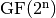 to  and Vector Boolean function in n variables with a function from to .
and Vector Boolean function in n variables with a function from to .
A trace is a function over a finite field defined as: 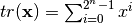
Since there is is an isomorphism between and , it is possible to identify the trace function with a Boolean function in n variables. Analogously, a Vector Boolean function can be identified with trace as follows:
When m=n, we endow with the structure of the field . Any 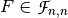 admits a unique univariate polynomial representation over , of degree at most  :
:
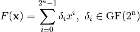
A general way to derive this polynomial representation is given by a Lagrange interpolation from the knowledge of the irreducible polynomial of degree n over associated with the field  and the Truth Table of F.
and the Truth Table of F.
The interpolation attack [JakobsenK:97] is efficient when the degree of the univariate polynomial representation of the S-box over is low or when the distance of the S-box to the set of low univariate degree functions is small. This attack exploits the low degree of the algebraic relation between some input (respective output) and intermediate data to infer some keybits relating the output (respective input) and the intermediate data.
Library¶
A VBF class can be initialized giving its trace f and the irreducible polynomial g with the following methods:
void putirrpol(GF2X& g)
void puttrace(string& f)
To obtain a Vector Boolean function trace representation the following method must be used:
void Trace(GF2EX& f, VBF& F)
and to print the trace representation use the following method:
void print(NTL_SNS ostream& s, GF2EX& f, const long& m)
Example¶
The following program provides the Trace representation over of a Vector Boolean function with Truth Table in a file with extension ”.tt”. is constructed with the irreducible polynomial whose corresponding GF2X representation is in a file with extension ”.irr”. The class GF2X implements polynomial arithmetic modulo 2 and a polynomial is represented as a coefficient vector.
#include <iostream>
#include <fstream>
#include "VBF.h"
int main(int argc, char *argv[])
{
using namespace VBFNS;
VBF F;
NTL::mat_GF2 T;
GF2X g;
GF2EX f;
int d;
char file[33];
sprintf(file,"%s.irr",argv[1]);
ifstream input1(file);
if(!input1) {
cerr << "Error opening " << file << endl;
return 0;
}
input1 >> g;
F.putirrpol(g);
input1.close();
sprintf(file,"%s.tt",argv[1]);
ifstream input(file);
if(!input) {
cerr << "Error opening " << file << endl;
return 0;
}
input >> T;
F.puttt(T);
input.close();
cout << "The trace representation is " << endl;
f = Trace(F);
d = deg(g);
print(cout,f,d);
return 0;
}
In this cipher,  is constructed with the irreducible polynomial 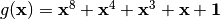. The inputs of this program would be the Truth Table of
is constructed with the irreducible polynomial 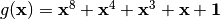. The inputs of this program would be the Truth Table of  in a file with extension ”.tt” and the corresponding GF2X representation of
in a file with extension ”.tt” and the corresponding GF2X representation of ![g: [1 1 0 1 1 0 0 0 1]](images/math/2a0747bc0e5304e646491fcd40995460a5599ed2.png) in a file with extension ”.irr”. The output of the program would be a GF2EX which represents polynomials over GF2E, and so can be used, for example, for arithmetic in :
in a file with extension ”.irr”. The output of the program would be a GF2EX which represents polynomials over GF2E, and so can be used, for example, for arithmetic in :
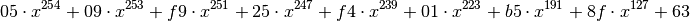
The coefficients are elements of .
Polynomials in ANF¶
Description¶
Any vector Boolean function can be uniquely represented by m multivariate polynomials over (called coordinate functions) where each variable has power at most one. Each of these polynomials can be expressed as a sum of all distinct *k*th-order product terms 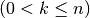 of the variables in the form:
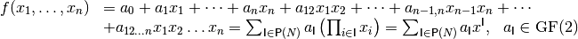
where 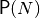 denotes the power set of  . This representation of f is called the algebraic normal form (ANF) of f. The algebraic normal form is thus a set of multivariate polynomials and the constant functions (those obtained by decomposition) are the coefficients of the products of input variables (i.e. monomials).
. This representation of f is called the algebraic normal form (ANF) of f. The algebraic normal form is thus a set of multivariate polynomials and the constant functions (those obtained by decomposition) are the coefficients of the products of input variables (i.e. monomials).
Library¶
A VBF class can be initialized giving its Polynomials in ANF with the following method:
void putpol(vec_pol& p)
To obtain its representation as Polynomials in ANF, the following method must be used:
void Pol(NTL_SNS ostream& s, VBF& F)
Example¶
The following program provides the Polynomials in ANF Vector Boolean function from its Truth Table.
#include <iostream>
#include <fstream>
#include "VBF.h"
int main(int argc, char *argv[])
{
using namespace VBFNS;
VBF F;
NTL::mat_GF2 T;
ifstream input(argv[1]);
if(!input) {
cerr << "Error opening " << argv[1] << endl;
return 0;
}
input >> T;
F.puttt(T);
input.close();
Pol(cout,F);
return 0;
}
If we use as input of this program the Truth Table of NibbleSub, the output of the program would be the following:
1+x4+x2+x2x3+x2x3x4+x1+x1x2+x1x2x3
1+x3x4+x2+x2x4+x1+x1x3+x1x3x4
1+x4+x3+x3x4+x2x4+x2x3+x1x4+x1x3+x1x2+x1x2x4+x1x2x3
x3+x2x4+x1+x1x4+x1x3x4
which corresponds to the coordinate functions of NibbleSub as follows:

ANF table¶
Description¶
ANF table of F, denoted by 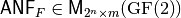, represents the coefficients of the polynomials of each of the m coordinate functions in ANF.
The ANF table of F, denoted by , is defined by 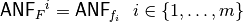 where 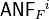 is the i-th column of  .
.
The ANF Table can be derived from the Truth Table by a binary matrix transformation called the Algebraic Normal Form Transformation (implemented in the VBF library with getanf method). The Truth Table can be obtained from the ANF Table using a method we call rev.
Library¶
A VBF class can be initialized giving its ANF table with the following method:
void putanf(const NTL::mat_GF2& A)
To obtain its representation as ANF table, the following method must be used:
void ANF(NTL::mat_GF2& X, VBF& F)
Example¶
The following program provides the ANF Table of a Vector Boolean function from its Truth Table.
#include <iostream>
#include <fstream>
#include "VBF.h"
int main(int argc, char *argv[])
{
using namespace VBFNS;
VBF F;
NTL::mat_GF2 T;
ifstream input(argv[1]);
if(!input) {
cerr << "Error opening " << argv[1] << endl;
return 0;
}
input >> T;
F.puttt(T);
input.close();
cout << "The ANF Table is:" << endl;
cout << ANF(F) << endl;
return 0;
}
If we use as input of this program the Truth Table of NibbleSub, the output of the program would be the following:
The ANF Table is:
[[1 1 1 0]
[1 0 1 0]
[0 0 1 1]
[0 1 1 0]
[1 1 0 0]
[0 1 1 1]
[1 0 1 0]
[1 0 0 0]
[1 1 0 1]
[0 0 1 1]
[0 1 1 0]
[0 1 0 1]
[1 0 1 0]
[0 0 1 0]
[1 0 1 0]
[0 0 0 0]
]
Characteristic Function¶
Description¶
The characteristic or indicator function of , denoted by 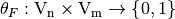, is defined by: 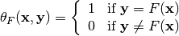
The Image of F can be represented by a matrix whose rows are indexed by  and whose columns are indexed by
and whose columns are indexed by  in lexicographic order, denoted by 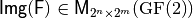 and defined as follows:
in lexicographic order, denoted by 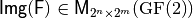 and defined as follows:
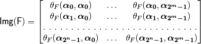
where 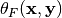 is the value of the indicator function at 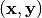.
It is clear that all the rows of the matrix have one element equal to one and the rest is zero, that is  :
:
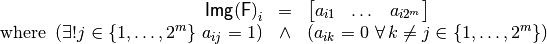
The Image of F can be derived from the Truth Table by a method implemented in the VBF library called charfunct. The Truth Table can be obtained from the Characteristic function using a method we call truthtable.
Library¶
A VBF class can be initialized giving its Image with the following method:
void putchar(const NTL::mat_ZZ& C)
To obtain its representation as Image, the following method must be used:
void Charact(NTL::mat_ZZ& C, VBF& F)
Example¶
The following program provides the Image of a Vector Boolean function from its Truth Table.
#include <iostream>
#include <fstream>
#include "VBF.h"
int main(int argc, char *argv[])
{
using namespace VBFNS;
VBF F;
NTL::mat_GF2 T;
ifstream input(argv[1]);
if(!input) {
cerr << "Error opening " << argv[1] << endl;
return 0;
}
input >> T;
F.puttt(T);
input.close();
cout << "The Image is:" << endl;
cout << Charact(F) << endl;
return 0;
}
If we use as input of this program the Truth Table of NibbleSub, the output of the program would be the following:
The Image is:
[[0 0 0 0 0 0 0 0 0 0 0 0 0 0 1 0]
[0 0 0 0 1 0 0 0 0 0 0 0 0 0 0 0]
[0 0 0 0 0 0 0 0 0 0 0 0 0 1 0 0]
[0 1 0 0 0 0 0 0 0 0 0 0 0 0 0 0]
[0 0 1 0 0 0 0 0 0 0 0 0 0 0 0 0]
[0 0 0 0 0 0 0 0 0 0 0 0 0 0 0 1]
[0 0 0 0 0 0 0 0 0 0 0 1 0 0 0 0]
[0 0 0 0 0 0 0 0 1 0 0 0 0 0 0 0]
[0 0 0 1 0 0 0 0 0 0 0 0 0 0 0 0]
[0 0 0 0 0 0 0 0 0 0 1 0 0 0 0 0]
[0 0 0 0 0 0 1 0 0 0 0 0 0 0 0 0]
[0 0 0 0 0 0 0 0 0 0 0 0 1 0 0 0]
[0 0 0 0 0 1 0 0 0 0 0 0 0 0 0 0]
[0 0 0 0 0 0 0 0 0 1 0 0 0 0 0 0]
[1 0 0 0 0 0 0 0 0 0 0 0 0 0 0 0]
[0 0 0 0 0 0 0 1 0 0 0 0 0 0 0 0]
]
This matrix can be easily interpreted with the aid of the figure in which the rows and columns are indexed with the corresponding vector:

You can see for instance that the output of 0000 is 1110.
Walsh Spectrum¶
Description¶
Linear and affine functions are considered as cryptographically weak functions. It is important to measure if a Vector Boolean function has some similarity with these functions. The similarity is measured by means of correlation. The values of Walsh Spectrum provide a measure of the correlation of the Vector Boolean function with the different Vector Boolean Linear functions.
Let  be the Walsh-Hadamard matrix of order , then the vectors associated with its columns constitute an orthogonal basis for
be the Walsh-Hadamard matrix of order , then the vectors associated with its columns constitute an orthogonal basis for  over
over  so that:
so that:

Let  , its sequence
, its sequence  can be defined as a linear combination of the sequences of all the linear functions over , as they coincide with the rows of .
can be defined as a linear combination of the sequences of all the linear functions over , as they coincide with the rows of .

where 
Let a Boolean function , the Walsh Transform of f at  is the n-dimensional Discrete Fourier Transform and can be calculated as follows:
is the n-dimensional Discrete Fourier Transform and can be calculated as follows:

or, as it is most often written as:

As a result, the Walsh Transform of at  is the coefficient of the sequence of f (
is the coefficient of the sequence of f ( ) with respect to the basis constituted by the sequences of linear functions, scaled by a factor of
) with respect to the basis constituted by the sequences of linear functions, scaled by a factor of  . If
. If  is the Walsh transform of f, we say that and form a Transform pair and write:
is the Walsh transform of f, we say that and form a Transform pair and write:

The Walsh Spectrum of f can be represented by a matrix whose rows are indexed by in lexicographic order, denoted by  and defined as follows:
and defined as follows:

where  is the value of the spectrum at . A Boolean function is uniquely determined by its Walsh Spectrum.
is the value of the spectrum at . A Boolean function is uniquely determined by its Walsh Spectrum.
Let the vector Boolean function , the Walsh Transform of F is the two-dimensional Walsh Transform defined by:

or, as it is most often written as:

The Walsh Spectrum of F can be represented by a matrix whose rows are indexed by and whose columns are indexed by  in lexicographic order, denoted by
in lexicographic order, denoted by  and defined as follows:
and defined as follows:
![\matr{WS}(F) = \begin{bmatrix} \walsh{\theta}_F(\boldsymbol{\alpha_0},\boldsymbol{\alpha_0})&\dots&\walsh{\theta}_F(\boldsymbol{\alpha_0},\boldsymbol{\alpha_{2^m-1}}) \\
\walsh{\theta}_F(\boldsymbol{\alpha_1},\boldsymbol{\alpha_0})&\dots&\walsh{\theta}_F(\boldsymbol{\alpha_1},\boldsymbol{\alpha_{2^m-1}}) \\
\hdotsfor[2]{3}\\
\walsh{\theta}_F(\boldsymbol{\alpha_{2^n-1}},\boldsymbol{\alpha_0})&\dots&\walsh{\theta}_F(\boldsymbol{\alpha_{2^n-1}},\boldsymbol{\alpha_{2^m-1}}) \\
\end{bmatrix}](images/math/cd58e17d7a9fcfbf0779c64805eaca8c5dbf6243.png)
where  is the value of the spectrum at
is the value of the spectrum at  .
.
We can deduce that the columns of this matrix are the spectra of the Boolean functions  for all the linear functions
for all the linear functions  .
.
Library¶
A VBF class can be initialized giving its Walsh Spectrum with the following method:
void putwalsh(const NTL::mat_ZZ& W)
To obtain its representation as Walsh Spectrum the following method must be used:
void Walsh(NTL::mat_ZZ& W, VBF& F)
Example¶
The following program provides the Walsh Spectrum of a Vector Boolean function from its Truth Table.
#include <iostream>
#include <fstream>
#include "VBF.h"
int main(int argc, char *argv[])
{
using namespace VBFNS;
VBF F;
NTL::mat_GF2 T;
ifstream input(argv[1]);
if(!input) {
cerr << "Error opening " << argv[1] << endl;
return 0;
}
input >> T;
F.puttt(T);
input.close();
cout << "The Walsh Spectrum is:" << endl;
cout << Walsh(F) << endl;
return 0;
}
If we use as input of this program the Truth Table of NibbleSub, the output of the program would be the following:
The Walsh Spectrum is:
[[16 0 0 0 0 0 0 0 0 0 0 0 0 0 0 0]
[0 0 -4 -4 0 0 -4 12 4 4 0 0 4 4 0 0]
[0 0 -4 -4 0 0 -4 -4 0 0 4 4 0 0 -12 4]
[0 0 0 0 0 0 0 0 4 -12 -4 -4 4 4 -4 -4]
[0 4 0 -4 -4 -8 -4 0 0 -4 0 4 4 -8 4 0]
[0 -4 -4 0 -4 0 8 4 -4 0 -8 4 0 -4 -4 0]
[0 4 -4 8 4 0 0 4 0 -4 4 8 -4 0 0 -4]
[0 -4 0 4 4 -8 4 0 -4 0 4 0 8 4 0 4]
[0 0 0 0 0 0 0 0 -4 4 4 -4 4 -4 -4 -12]
[0 0 -4 -4 0 0 -4 -4 -8 0 -4 4 0 8 4 -4]
[0 8 -4 4 -8 0 4 -4 4 4 0 0 4 4 0 0]
[0 8 0 -8 8 0 8 0 0 0 0 0 0 0 0 0]
[0 -4 8 -4 -4 0 4 0 4 0 4 8 0 4 0 -4]
[0 4 4 0 -4 8 0 4 -8 -4 4 0 4 0 0 4]
[0 4 4 0 -4 -8 0 4 -4 0 0 -4 -8 4 -4 0]
[0 -4 -8 -4 -4 0 4 0 0 -4 8 -4 -4 0 4 0]
]
We can see that the Walsh Spectrum of  where
where

corresponds to the Spectrum of  . As a consequence, the Walsh Spectrum of coincides with the 9-th column of
. As a consequence, the Walsh Spectrum of coincides with the 9-th column of  , that is, the column indexed by the vector
, that is, the column indexed by the vector  .
.
Linear Profile¶
Description¶
Overview of Linear Cryptanalysis¶
A complete enumeration of all linear approximations of the S-box is given in the Linear Profile (In the literature, an equivalent matrix called Linear Approximation Table is used as well), which is a matrix whose rows are indexed by and whose columns are indexed by in lexicographic order, denoted by  . It holds that
. It holds that  . The lower bound of the Linear Profile values is 0 and the upper bound is
. The lower bound of the Linear Profile values is 0 and the upper bound is  .
.
If we divide each element in the Linear Profile by the value on  , these values represent the number of matches between the linear equation represented in hexadecimal as “Input Sum” and the sum of the output bits represented in hexadecimal as “Output Sum”. Hence, subtracting to these values
, these values represent the number of matches between the linear equation represented in hexadecimal as “Input Sum” and the sum of the output bits represented in hexadecimal as “Output Sum”. Hence, subtracting to these values  give the probability bias for the particular linear combination of input and output bits. The hexadecimal value representing a sum, when viewed as a binary value indicates the variables involved in the sum. For a linear combination of input variables represented as
give the probability bias for the particular linear combination of input and output bits. The hexadecimal value representing a sum, when viewed as a binary value indicates the variables involved in the sum. For a linear combination of input variables represented as  where
where  , the hexadecimal value represents the binary value
, the hexadecimal value represents the binary value  , where
, where  is the most significant bit. Similarly, for a linear combination of output bits
is the most significant bit. Similarly, for a linear combination of output bits  where
where  , the hexadecimal value represents the binary vector 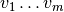.
, the hexadecimal value represents the binary vector 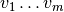.
In Linear Profiles, we are looking for entries with large value. If all of the entries are small, then the S-box does not have a very linear structure, and it may make Linear Cryptanalysis on the cipher difficult. The Linear potential of F, defined as  is a measure of linearity in Linear Cryptanalysis, and satisfies
is a measure of linearity in Linear Cryptanalysis, and satisfies  so that the lower bound holds if and only if F has maximum nonlinearity (F is bent) and the upper bound is reached when F is linear or affine. This criterion can take values from to 1. The larger
so that the lower bound holds if and only if F has maximum nonlinearity (F is bent) and the upper bound is reached when F is linear or affine. This criterion can take values from to 1. The larger  is, the “closer” to a Linear Vector Boolean function is F.
is, the “closer” to a Linear Vector Boolean function is F.
Library¶
Note that the Linear Profile does not uniquely determine a Vector Boolean function. Thus, a VBF class cannot be initialized by its Linear Profile. To obtain its representation as Linear Profile, the following method must be used:
void LAT(NTL::mat_ZZ& LP, VBF& F)
In the VBF library, several methods have been defined in order to analyse the feasibility of Linear Cryptanalysis: Linear potential and Linear relations associated with a specific value of the Linear Profile. The method used to obtain the linear potential is the following:
void lp(NTL::RR& x, VBF& F)
If we want to obtain the linear expressions associated with the value of the Linear Profile “w”, we will use this method:
void linear(NTL_SNS ostream& s, VBF& a, ZZ& w)
If we want to obtain the probability bias  that a linear expression holds with the value of the Linear Profile “w”, we will use this method:
that a linear expression holds with the value of the Linear Profile “w”, we will use this method:
void ProbLin(NTL::RR& x, VBF& a, NTL::ZZ& w)
Example¶
The following program finds out the Linear Profile of a Vector Boolean function together with the linear expressions that have the highest value, except from the value in , their probability, this highest value and the linear potential.
#include <iostream>
#include <fstream>
#include "VBF.h"
int main(int argc, char *argv[])
{
using namespace VBFNS;
VBF F;
NTL::mat_GF2 T;
NTL::ZZ w;
NTL::RR bias;
ifstream input(argv[1]);
if(!input) {
cerr << "Error opening " << argv[1] << endl;
return 0;
}
input >> T;
F.puttt(T);
input.close();
cout << "The Linear Profile is:" << endl;
cout << LAT(F) << endl;
w = maxLAT(F);
cout << endl << "The highest value of the Linear Profile is= "
<< w << endl << endl;
cout << "The linear expressions that have the highest value are:"
<< endl;
linear(cout,F,w);
ProbLin(bias,F,w);
cout << endl;
cout << "These expressions hold with probability bias= "
<< bias << endl;
cout << endl << "The linear potential is= " << lp(F) << endl;
return 0;
}
If we use as input of this program the Truth Table of NibbleSub, the output of the program would be the following:
The Linear Profile is:
[[256 0 0 0 0 0 0 0 0 0 0 0 0 0 0 0]
[0 0 16 16 0 0 16 144 16 16 0 0 16 16 0 0]
[0 0 16 16 0 0 16 16 0 0 16 16 0 0 144 16]
[0 0 0 0 0 0 0 0 16 144 16 16 16 16 16 16]
[0 16 0 16 16 64 16 0 0 16 0 16 16 64 16 0]
[0 16 16 0 16 0 64 16 16 0 64 16 0 16 16 0]
[0 16 16 64 16 0 0 16 0 16 16 64 16 0 0 16]
[0 16 0 16 16 64 16 0 16 0 16 0 64 16 0 16]
[0 0 0 0 0 0 0 0 16 16 16 16 16 16 16 144]
[0 0 16 16 0 0 16 16 64 0 16 16 0 64 16 16]
[0 64 16 16 64 0 16 16 16 16 0 0 16 16 0 0]
[0 64 0 64 64 0 64 0 0 0 0 0 0 0 0 0]
[0 16 64 16 16 0 16 0 16 0 16 64 0 16 0 16]
[0 16 16 0 16 64 0 16 64 16 16 0 16 0 0 16]
[0 16 16 0 16 64 0 16 16 0 0 16 64 16 16 0]
[0 16 64 16 16 0 16 0 0 16 64 16 16 0 16 0]
]
The highest value of the Linear Profile is= 144
The linear expressions that have the highest value are:
x4=y2+y3+y4
x3=y1+y2+y3
x3+x4=y1+y4
x1=y1+y2+y3+y4
These expressions hold with probability bias= 0.0625
The linear potential is= 0.5625
The figure represents the Linear Profile of NibbleSub and emphasizes in red the elements which achieve the highest value.

Differential Profile¶
Description¶
The first step of Differential Cryptanalysis is to compute the characteristics of inputs and the outputs of the S-boxes, which we will then combine together to form a characteristic for the complete cipher. Consider a  S-box with input
S-box with input  and output
and output  . All difference pairs of an S-box,
. All difference pairs of an S-box,  , can be examined and the probability of
, can be examined and the probability of  given
given  can be derived by considering input pairs
can be derived by considering input pairs  such that
such that  . Since the ordering of the pair is not relevant, for a S-box we need only consider all values for
. Since the ordering of the pair is not relevant, for a S-box we need only consider all values for  and then the value of constrains the value of
and then the value of constrains the value of  to be
to be  . We can derive the resulting values of for each input pair
. We can derive the resulting values of for each input pair  .
.
We can tabulate the complete differential data for an S-box in the Differential Profile (In the literature, an equivalent matrix called Difference Distribution Table is used as well), which the rows represent values and the columns represent values.
If we divide each element in the Differential Profile by the value on  , these values represent the probability of the corresponding output difference value given the input difference , that is
, these values represent the probability of the corresponding output difference value given the input difference , that is  , called characteristic. In general, entries in the Differential Profile with fewer bits set in the and that have higher probability are desirable.
, called characteristic. In general, entries in the Differential Profile with fewer bits set in the and that have higher probability are desirable.
Let , if we denote by  the set of vectors where the difference Vector Boolean Function of F in the direction of coincides with by:
the set of vectors where the difference Vector Boolean Function of F in the direction of coincides with by:

Let where  . The matrix containing all possible values of
. The matrix containing all possible values of  is referred to as its XOR or Differential Distribution Table.
is referred to as its XOR or Differential Distribution Table.
Nyberg in [Nyberg:93] introduced the concept of differential uniformity as a measure of the resistance to differential crytanalysis as follows:
A Vector Boolean function is called differentially  -uniform if for all
-uniform if for all  and :
and :

Let (differential uniformity of F) is the largest value in Differential Distribution Table of F (not counting the first entry in the first row), namely,

Let define the function  as:
as:  .
.
The Differential Profile of F can be represented by a matrix whose rows are indexed by and whose columns are indexed by in lexicographic order, denoted by  and defined as follows:
and defined as follows:
![\matr{DP}(F) = 2^{2n+m} \begin{bmatrix}
\delta_F(\boldsymbol{\alpha_0},\boldsymbol{\alpha_0})&\dots&\delta_F(\boldsymbol{\alpha_0},\boldsymbol{\alpha_{2^m-1}}) \\
\delta_F(\boldsymbol{\alpha_1},\boldsymbol{\alpha_0})&\dots&\delta_F(\boldsymbol{\alpha_1},\boldsymbol{\alpha_{2^m-1}}) \\
\hdotsfor[2]{3} \\
\delta_F(\boldsymbol{\alpha_{2^n-1}},\boldsymbol{\alpha_0})&\dots&\delta_F(\boldsymbol{\alpha_{2^n-1}},\boldsymbol{\alpha_{2^m-1}})
\end{bmatrix}](images/math/4a2aac949cea9a61ff68a72fcdb5fc0dfe9b0abd.png)
The maximum value of  is called the differential potential of F:
is called the differential potential of F:

The differential uniformity of and its differential potential are related as:  .
.
It is a measure of the robustness against differential cryptanalysis where  and the lower bound holds if and only if F is bent and the upper bound is reached when F is linear or affine. The differential uniformity of and its differential potential are related by
and the lower bound holds if and only if F is bent and the upper bound is reached when F is linear or affine. The differential uniformity of and its differential potential are related by  .
.
Library¶
Note that the Differential Profile does not uniquely determine a Vector Boolean function. Thus, a VBF class cannot be initialized by its Differential Profile. To obtain its representation as Differential Profile, the following method must be used:
void DAT(NTL::mat_ZZ& DP, VBF& F)
In the VBF library, several methods have been defined in order to analyse the feasibility of differential cryptanalysis: Differential potential and Differential relations associated with a specific value of the Differential profile. The method used to obtain the differential potential is the following:
void dp(NTL::RR& x, VBF& F)
If we want to obtain the characteristics associated with the value of the Differential Profile “w”, we will use this method:
void differential(NTL_SNS ostream& s, VBF& a, ZZ& w)
If we want to obtain the probability that a characteristic holds with the value of the Differential Profile “w”, we will use this method:
void ProbDif(NTL::RR& x, VBF& a, NTL::ZZ& w)
Example¶
The following program finds out the Differential Profile of a Vector Boolean function together with the characteristics that have the highest value, except from the value in , their probability, this highest value and the differential potential.
#include <iostream>
#include <fstream>
#include "VBF.h"
int main(int argc, char *argv[])
{
using namespace VBFNS;
VBF F;
NTL::mat_GF2 T;
NTL::ZZ w;
NTL::RR p;
ifstream input(argv[1]);
if(!input) {
cerr << "Error opening " << argv[1] << endl;
return 0;
}
input >> T;
F.puttt(T);
input.close();
cout << "The Differential Profile is:" << endl;
cout << DAT(F) << endl;
w = maxDAT(F);
cout << endl << "The highest value of the Differential Profile is= "
<< w << endl;
cout << endl << "The characteristics that have the highest value are:"
<< endl;
differential(cout,F,w);
ProbDif(p,F,w);
cout << endl << "These expressions hold with probability= " << p << endl;
cout << endl << "The differential potential is= " << dp(F) << endl;
return 0;
}
If we use as input of this program the Truth Table of NibbleSub, the output of the program would be the following:
The Differential Profile is:
[[4096 0 0 0 0 0 0 0 0 0 0 0 0 0 0 0]
[0 0 0 512 0 0 0 512 0 512 1024 0 1024 512 0 0]
[0 0 0 512 0 1536 512 512 0 512 0 0 0 0 512 0]
[0 0 512 0 512 0 0 0 0 1024 512 0 512 0 0 1024]
[0 0 0 512 0 0 1536 0 0 512 0 1024 512 0 0 0]
[0 1024 0 0 0 512 512 0 0 0 1024 0 512 0 0 512]
[0 0 0 1024 0 1024 0 0 0 0 0 0 512 512 512 512]
[0 0 512 512 512 0 512 0 0 512 512 0 0 0 0 1024]
[0 0 0 0 0 0 512 512 0 0 0 1024 0 1024 512 512]
[0 512 0 0 512 0 0 1024 512 0 512 512 512 0 0 0]
[0 512 512 0 0 0 0 0 1536 0 0 512 0 0 1024 0]
[0 0 2048 0 0 512 0 512 0 0 0 0 0 512 0 512]
[0 512 0 0 512 512 512 0 0 0 0 512 0 1536 0 0]
[0 1024 0 0 0 0 0 1024 512 0 512 0 512 0 512 0]
[0 0 512 1024 512 0 0 0 1536 0 0 0 0 0 512 0]
[0 512 0 0 1536 0 0 0 0 1024 0 512 0 0 512 0]
]
The highest value of the Differential Profile is= 2048
The characteristics that have the highest value are:
[1 0 1 1]->[0 0 1 0]
These expressions hold with probability= 0.5
The differential potential is= 0.5
The figure represents the Differential Profile of NibbleSub and emphasizes in blue the elements which achieve the highest value.

Autocorrelation Spectrum¶
Description¶
The Autocorrelation provides a useful description of a Vector Boolean function in relation to some cryptographic criteria. It is derived from the sequences of the component functions of the Vector Boolean function and does not uniquely determine the Vector Boolean function itself.
The directional derivative of in the direction of is defined as  .
.
Similarly, the directional derivative of the sequence of a Boolean function in the direction of is defined as:  .
.
The autocorrelation of with respect to the shift ,  , is defined by the Polarity Truth Table to be:
, is defined by the Polarity Truth Table to be:

From this definition of the autocorrelation function we note two important properties:
- For every Boolean function
 , since
, since  .
. - The value of
 when
when  must be proportional to the correlation between
must be proportional to the correlation between  and
and  , i.e.:
, i.e.:  .
.
The Aucorrelation Spectrum gives an indication of the imbalance of all first order derivatives of the component functions of a Vector Boolean function. As differential cryptanalysis exploits imbalanced derivatives of Vector Boolean functions, the Aucorrelation Spectrum is vital in the analysis.
Linear structures¶
If the directional derivative of in the direction of :  is a constant function, then is a linear structure of
is a constant function, then is a linear structure of  [Lai:95] [Chaum:E85]. The zero vector
[Lai:95] [Chaum:E85]. The zero vector  is a trivial linear structure since
is a trivial linear structure since  . From the point of view of autocorrelation, a vector in is a linear structure if it satisfies the following:
. From the point of view of autocorrelation, a vector in is a linear structure if it satisfies the following:
The vector is a linear structure of if and only if  .
.
The notion of linear structures can be extended for the case of Vector Boolean functions. The definition of a Vector Boolean function that has a linear structure was originally proposed by Chaum [Chaum:E85] and Evertse [Evertse:87]. They defined that a Vector Boolean function F has a linear structure by considering the existence of nontrivial linear structure in any of the component functions of F.
is said to have a linear structure if there exists a nonzero vector together with a nonzero vector such that  takes the same value
takes the same value  .
.
is said to have a linear structure if there exists a nonzero vector together with a nonzero vector such that  .
.
Nonlinear cryptographic functions used in block ciphers should have no nonzero linear structures [Evertse:87]. The existence of nonzero linear structures, for the functions implemented in stream ciphers, is a potential risk that should also be avoided, despite the fact that such existence could not be used in attacks, so far.
Library¶
To obtain its representation as Autocorrelation Spectrum, the following method must be used:
void AC(NTL::mat_ZZ& R, VBF& F)
The method used to obtain the linear structures is the following:
void LS(NTL_SNS ostream& s, VBF& F)
Example¶
The following program finds out the Autocorrelation Spectrum of a Vector Boolean function together with its linear structures having as input its Truth Table.
#include <iostream>
#include <fstream>
#include "VBF.h"
int main(int argc, char *argv[])
{
using namespace VBFNS;
VBF F;
NTL::mat_GF2 T;
ifstream input(argv[1]);
if(!input) {
cerr << "Error opening " << argv[1] << endl;
return 0;
}
input >> T;
F.puttt(T);
input.close();
cout << "The Autocorrelation Spectrum is:" << endl;
cout << AC(F) << endl;
cout << endl << "The linear structures are: " << endl;
LS(cout,F);
return 0;
}
If we use as input of this program the Truth Table of NibbleSub, the output of the program would be the following:
The Autocorrelation Spectrum is:
[[16 16 16 16 16 16 16 16 16 16 16 16 16 16 16 16]
[16 0 0 0 0 0 -8 -8 -8 -8 -8 8 0 0 8 8]
[16 -8 0 -8 -8 0 0 8 8 -8 0 0 -8 8 -8 8]
[16 0 0 0 0 0 0 -16 -8 8 0 0 0 0 -8 8]
[16 0 -8 0 0 -16 0 8 0 8 -8 -8 -8 0 8 8]
[16 0 0 -8 0 0 0 -8 0 -8 8 -8 0 -8 8 8]
[16 -8 0 0 -8 0 -8 8 0 -8 0 0 8 0 -8 8]
[16 0 -8 0 0 0 0 -8 0 8 0 0 0 -8 -8 8]
[16 -8 -8 0 -8 0 0 8 -8 8 0 0 0 0 8 -8]
[16 0 0 8 0 0 0 -8 0 -8 0 0 -8 0 8 -8]
[16 8 0 0 8 0 8 8 -8 -8 0 -8 0 0 -8 -16]
[16 0 -8 -8 0 16 -8 -8 8 8 -8 -8 8 8 -8 -8]
[16 -8 8 -8 -8 0 -8 8 0 8 0 0 0 -8 8 -8]
[16 0 0 0 0 0 8 -8 0 -16 0 0 0 0 8 -8]
[16 8 0 8 8 0 0 8 0 -8 -8 0 0 -8 -16 -8]
[16 0 8 0 0 -16 0 -8 0 8 8 8 -8 0 -8 -8]
]
The linear structures are:
([0 0 1 1],[0 1 1 1])
([0 1 0 0],[0 1 0 1])
([1 0 1 0],[1 1 1 1])
([1 0 1 1],[0 1 0 1])
([1 1 0 1],[1 0 0 1])
([1 1 1 0],[1 1 1 0])
([1 1 1 1],[0 1 0 1])
We can notice that NibbleSub S-box has seven linear structures which are the following:
The figure represents the Autocorrelation Spectrum of NibbleSub and emphasizes in red the values corresponding these linear structures.

Affine function and affine equivalence¶
Description¶
A Boolean linear function is defined as a Boolean function consisting only of the sum of single input variables. Similarly, the set of Boolean affine functions is defined as the set of linear functions and their complements. A mathematical description of the linear and affine Boolean functions is given as follows.
A Boolean linear function is defined as the sum of a subset of the input variables, denoted  where
where  .
.
The set of Boolean affine functions are the linear functions and their complements, denoted  where
where  .
.
An affine Vector Boolean function is defined in terms of a linear Vector Boolean function and a dyadic shift. A linear Vector Boolean function involves the multiplication of the input vector by a Boolean matrix. A dyadic shift (or translation) involves the complement of a subset of input bits. As such, an affine Vector Boolean function may be defined as the combination of a linear Vector Boolean function and dyadic shift. A mathematical description of the linear and affine Vector Boolean functions is given as follows.
A Vector Boolean function  defined as
defined as  with
with  and
and  so that if
so that if  then F is linear and if
then F is linear and if  then F is affine.
then F is affine.
Affine equivalence of Boolean functions¶
Equivalence classes provide a powerful tool in both the construction and analysis of Boolean functions for cryptography. In particular, rather than considering the entire space of  functions a reduced view can be found in the consideration of only one function from each equivalence class.
functions a reduced view can be found in the consideration of only one function from each equivalence class.
If 
where  non-singular,
non-singular,  and
and  and it is an affine transformation. The functions f and g satisfying the previous equation are called equivalent under the action of
and it is an affine transformation. The functions f and g satisfying the previous equation are called equivalent under the action of  .
.
Of particular interest in the study of equivalence classes is the effect of the affine transformation on the algebraic degree, the Walsh Spectrum and Autocorrelation Spectrum of a Boolean function.
Frequency distribution of absolute values of Walsh Spectrum¶
The effect of the application of an affine transformation to a Boolean function on the Walsh Spectrum is to rearrange the values and hence, the Walsh value distributions are invariant under all affine transformations [Preneel:93]:

Thus nonlinearity is also invariant under affine transformation.
Frequency distribution of absolute values of Autocorrelation Spectrum¶
The effect of the application of an affine transformation to a Boolean function on the Autocorrelation Spectrum is to rearrange the values and hence, the Autocorrelation value distributions are invariant under all affine transformations [Preneel:93]:

Thus absolute indicator is also invariant under affine transformation.
Library¶
A VBF class can be initialized for a affine Vector Boolean function giving its corresponding matrix and vector by the following method:
void putaffine(const NTL::mat_GF2& A,const NTL::vec_GF2& b)
The method used to obtain the Frequency distribution of the absolute values of the Walsh Spectrum is the following:
void printFWH(NTL_SNS ostream& s, VBF& F)
The method used to obtain the Frequency distribution of the absolute values of the Autocorrelation Spectrum is the following:
void printFAC(NTL_SNS ostream& s, VBF& F)
Example¶
The following program finds out the Walsh Spectrum, Frequency distribution of the absolute values of the Walsh Spectrum, Autocorrelation Spectrum, and Frequency distribution of the absolute values of the Autocorrelation Spectrum of a Vector Boolean function having as input the matrix  and the vector
and the vector  associated with an affine function where:
associated with an affine function where:

#include <iostream>
#include <fstream>
#include "VBF.h"
int main(int argc, char *argv[])
{
using namespace VBFNS;
VBF F;
NTL::mat_GF2 A;
NTL::vec_GF2 b;
ifstream input(argv[1]);
if(!input) {
cerr << "Error opening " << argv[1] << endl;
return 0;
}
input >> A;
input >> b;
F.putaffine(A,b);
input.close();
cout << "The Walsh Spectrum is:" << endl << Walsh(F) << endl << endl;
cout << "Frequency distribution of the absolute values of
the Walsh Spectrum:" << endl;
printFWH(cout,F);
cout << endl;
cout << "The Autocorrelation Spectrum is:" << endl << AC(F) << endl;
cout << "Frequency distribution of the absolute values of
the Autocorrelation Spectrum:" << endl;
printFAC(cout,F);
cout << endl;
return 0;
}
The output of the program would be the following:
The Walsh Spectrum is:
[[4 0 0 0]
[0 0 4 0]
[0 -4 0 0]
[0 0 0 -4]
]
Frequency distribution of the absolute values of the Walsh Spectrum:
(0,3),(4,1)
(0,3),(4,1)
(0,3),(4,1)
The Autocorrelation Spectrum is:
[[4 4 4 4]
[4 4 -4 -4]
[4 -4 4 -4]
[4 -4 -4 4]
]
Frequency distribution of the absolute values of the Autocorrelation Spectrum:
(4,4)
(4,4)
(4,4)
Cycle structure, fixed points and negated fixed points¶
Description¶
The cycle structure of an invertible vector Boolean function (permutation) describes the number of cycles and their length.
A permutation can also be written in a way that groups together the images of a given number under repeated applications of F. For example, the permutation:
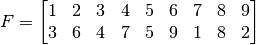
can be written
The first group of numbers in parentheses indicates that 1 gets mapped to 3, 3 gets mapped to 4, 4 gets mapped to 7, and 7 gets mapped back to 1. Each of the other groupings is interpreted in a similar way. These groups of numbers are called cycles, and this notation for permutations is referred to as cycle notation. Following are several facts relating to cycles and cycle notation:
- A cycle of k numbers is referred to as a k-cycle or a cycle of length k; for example, 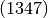 is a 4-cycle or a cycle of length 4.
- A cycle of one number indicates that the number is mapped to itself, and 1-cycles are often referred to as fixed points. In the example above, there are two fixed points: 5 and 8.
- It does not matter which number is written first in a cycle, as long as the order of the numbers is preserved. For example, 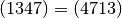, but
 .
.
A cycle structure with a low number of cycles of high length is considered well suited to be used in cipher design. This fact means that many transpositions are present.
The fixed points of F are those which belong to the set . The negated fixed points of F belong to the set where is the inverse of  or the vector resulting from adding 1 to each of its components.
or the vector resulting from adding 1 to each of its components.
A cryptographic primitive with a high number of fixed and/or negated fixed points is considered to be not well designed, since it lacks the needed randomness.
Library¶
The method used to obtain the Cycle Structure is the following:
void Cycle(NTL::vec_ZZ& v, VBF& F)
The method used to print the Cycle structure so that each row has two values separated by a comma: the first one is the Cycle length and the second one is the number of cycles for this length.
void printCycle(NTL_SNS ostream& s, VBF& F)
The fixed points of F are obtained by this method:
NTL::mat_GF2 fixedpoints(VBF& F)
The negated fixed points of F are obtained by this method:
NTL::mat_GF2 negatedfixedpoints(VBF& F)
Example¶
The following program prints the cycle structure of a Vector Boolean function having as input its Truth Table.
#include <iostream>
#include <fstream>
#include "VBF.h"
int main(int argc, char *argv[])
{
using namespace VBFNS;
VBF F;
NTL::mat_GF2 T;
ifstream input(argv[1]);
if(!input) {
cerr << "Error opening " << argv[1] << endl;
return 0;
}
input >> T;
F.puttt(T);
input.close();
cout << "The Cycle Structure is:" << endl;
printCycle(cout,F);
cout << endl << "The fixed points are the following:"
<< endl;
cout << fixedpoints(F) << endl;
cout << endl << "The negated fixed points are the following:"
<< endl;
cout << negatedfixedpoints(F) << endl;
return 0;
}
If we use as input of this program the Truth Table of NibbleSub, the output of the program would be the following:
The Cycle Structure is:
2,1
14,1
The fixed points are the following:
[]
The negated fixed points are the following:
[[0 0 1 0]
[0 1 1 1]
]
which means:
| Cycle structure of NibbleSub | |
|---|---|
| Cycle length | Number of cycles |
| 2 | 1 |
| 14 | 1 |
It has no fixed points and 2 negated fixed points which are the following:
[0 0 1 0]
[0 1 1 1]
This is because 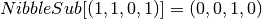 and 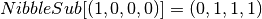.
Permutation matrix¶
Description¶
If F is a Boolean permutation, that is, it is bijective and has the same number of input bits as output bits (n=m), then it can be defined as an array: 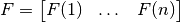 where is the output bit of the input bit i for F.
Library¶
A VBF class can be initialized giving its permutation vector with the following method:
void putper(const NTL::vec_ZZ& v)
To obtain its representation as permutation vector, the following method must be used:
void PER(NTL::vec_ZZ& v, VBF& F)
Example¶
The following program finds out the Truth Table of a Vector Boolean function having as input its Permutation Vector:
[ 1 2 3 4 13 14 15 16 9 10 11 12 5 6 7 8 ]
For example, you can see bit 13 moves to bit 5, while bit 5 moves to bit 13.
#include <iostream>
#include <fstream>
#include "VBF.h"
int main(int argc, char *argv[])
{
using namespace VBFNS;
VBF F;
NTL::vec_ZZ a;
ifstream input(argv[1]);
if(!input) {
cerr << "Error opening " << argv[1] << endl;
return 0;
}
input >> a;
F.putper(a);
input.close();
cout << "The Truth Table is:" << endl;
cout << TT(F) << endl;
return 0;
}
The first 10 lines of the output of the program would be the following:
The Truth Table is:
[[0 0 0 0 0 0 0 0 0 0 0 0 0 0 0 0]
[0 0 0 0 0 0 0 1 0 0 0 0 0 0 0 0]
[0 0 0 0 0 0 1 0 0 0 0 0 0 0 0 0]
[0 0 0 0 0 0 1 1 0 0 0 0 0 0 0 0]
[0 0 0 0 0 1 0 0 0 0 0 0 0 0 0 0]
[0 0 0 0 0 1 0 1 0 0 0 0 0 0 0 0]
[0 0 0 0 0 1 1 0 0 0 0 0 0 0 0 0]
[0 0 0 0 0 1 1 1 0 0 0 0 0 0 0 0]
[0 0 0 0 1 0 0 0 0 0 0 0 0 0 0 0]
DES representations¶
The VBF library accepts to types of representations of DES [DES:77] components:
Expansion and Compression DES permutations. It can be used to represent both the Compression Permutation in the Key Transformation of DES and the Expansion Permutation Feistel Function of the DES cipher. The Compression Permutation permutes the order of the bits as well as selects a subset of bits. The Expansion Permutation expands the right half of the data,
 , from 32 bits to 48 bits. Because this operation changes the order of the bits as well as repeating certain bits, it is known as an expansion permutation.
, from 32 bits to 48 bits. Because this operation changes the order of the bits as well as repeating certain bits, it is known as an expansion permutation.DES S-box Substitution. Each S-box is a table of 4 rows and 16 columns. Each entry in the box is a 4-bit number. The 6 input bits of the S-box specify under which row and column number to look for the output.
The input bits specify an entry in the S-box as follows: Consider an S-box input of 6-bits, labeled
 and
and  . Bits
. Bits  and are combined to form a 2-bit number, from 0 to 3, which corresponds to a row in the table. The middle 4 bits,
and are combined to form a 2-bit number, from 0 to 3, which corresponds to a row in the table. The middle 4 bits,  through
through  , are combined to form a 4-bit number, from 0 to 15, which corresponds to a column in the table.
, are combined to form a 4-bit number, from 0 to 15, which corresponds to a column in the table.For example, assume that the input to the first S-box (i.e. bits 1 to 6 of the XOR function) is 110011. The first and last bits combine to form 11, which corresponds to row 3 of the first S-box. The middle 4 bits combine to form 1001, which corresponds to the column 9 of the same S-box. The entry under row 3, column 9 of S-box 1 is 11 (count rows and columns starting from 0). The value 1110 is substituted for 001011
The following figures list the eight S-boxes used in DES. Each S-box replaces a 6-bit input with a 4-bit output. Given a 6-bit input, the 4-bit output is found by selecting the row using the outer two bits, and the column using the inner four bits. For example, an input “011011” has outer bits “01” and inner bits “1101”; noting that the first row is “00” and the first column is “0000”, the corresponding output for S-box S5 would be “1001” (=9), the value in the second row, 14th column.


Library¶
A VBF class can be initialized giving its Expansion and Compression DES permutation vector with the following method:
void putexp_comp(const NTL::vec_ZZ& v)
A VBF class can be initialized giving its DES-like S-box representation matrix with the following method:
void putsbox(const NTL::mat_ZZ& S)
Example¶
The following program prints the Truth Table of a Expansion permutation and of the DES S1 S-box. The inputs are respectively the following:
[ 4 1 2 3 4 1 ]
[[14 4 13 1 2 15 11 8 3 10 6 12 5 9 0 7 ]
[ 0 15 7 4 14 2 13 1 10 6 12 11 9 5 3 8 ]
[ 4 1 14 8 13 6 2 11 15 12 9 7 3 10 5 0]
[ 15 12 8 2 4 9 1 7 5 11 3 14 10 0 6 13]]
#include <iostream>
#include <fstream>
#include "VBF.h"
int main(int argc, char *argv[])
{
using namespace VBFNS;
VBF F,G;
NTL::vec_ZZ v;
NTL::mat_ZZ S;
ifstream inputv(argv[1]);
if(!inputv) {
cerr << "Error opening " << argv[1] << endl;
return 0;
}
inputv >> v;
inputv.close();
F.putexp_comp(v);
ifstream inputS(argv[2]);
if(!inputS) {
cerr << "Error opening " << argv[2] << endl;
return 0;
}
inputS >> S;
inputS.close();
G.putsbox(S);
cout << "The Truth Table of Expansion Permutation is:"
<< endl << TT(F) << endl;
cout << endl << "The Truth Table of S1 DES S-box is:"
<< endl << TT(G) << endl;
return 0;
}
The output of the program would be the following (Only a few values of S1 Truth Table is printed for space reasons):
The Truth Table of Expansion Permutation is:
[[0 0 0 0 0 0]
[1 0 0 0 1 0]
[0 0 0 1 0 0]
[1 0 0 1 1 0]
[0 0 1 0 0 0]
[1 0 1 0 1 0]
[0 0 1 1 0 0]
[1 0 1 1 1 0]
[0 1 0 0 0 1]
[1 1 0 0 1 1]
[0 1 0 1 0 1]
[1 1 0 1 1 1]
[0 1 1 0 0 1]
[1 1 1 0 1 1]
[0 1 1 1 0 1]
[1 1 1 1 1 1]
]
The Truth Table of S1 DES S-box is:
[[1 1 1 0]
[0 0 0 0]
[0 1 0 0]
[1 1 1 1]
[1 1 0 1]
[0 1 1 1]
[0 0 0 1]
[0 1 0 0]
[0 0 1 0]
[1 1 1 0]
[1 1 1 1]
[0 0 1 0]
[1 0 1 1]
[1 1 0 1]
[1 0 0 0]
[0 0 0 1]
...
Auxiliary functions¶
In order to compute the matrices described above, some functions have been implemented which allow to obtain some of these matrices from others:
- A function whose input is an ANF table and its output is the Truth Table:
mat_GF2 rev(const mat_GF2& A, int n, int m). - A function whose input is the Characteristic Function and its output is the Truth Table:
mat_GF2 truthtable(const mat_ZZ& C, int n, int m). - A function whose input is the Truth Table and its output is the Characteristic Function:
mat_ZZ charfunct(const mat_GF2& T, int n, int m). - A function whose input is the Walsh Spectrum and its output is the Characteristic Function (that is the Inverse Walsh Transform):
mat_ZZ invwt(const mat_ZZ& X, int n, int m). - A matrix representing the linear combinations of Truth Table coordinate functions
void LTT(NTL::mat_GF2& X, VBF& a). - A matrix representing character form of Truth Table coordinate functions
void CTT(NTL::mat\_GF2\& X, VBF\& a).
Summary¶
Table Representations Table lists the member functions related to
methods of vector Boolean functions initialization. Table
Characterizations Table lists the member functions related to the characterizations of vector Boolean functions as described above. Most of the member
functions of VBF have an in-line definition, for instance: void TT(NTL::mat_GF2& X, VBF& F) is also defined as inline NTL::mat_GF2 TT(VBF& F).
| Representation of VBF | |
|---|---|
| SYNTAX | DESCRIPTION |
void puttt(const NTL::mat_GF2& X) |
 |
void putHexTT(istream& s) |
VBF which has an hexadecimal representation of its truth table defined by s |
void putDecTT(const NTL::vec_long& d,const long& m) |
VBF with a decimal representation of its truth table defined by d and m is the number of component Boolean functions |
void putltt(const NTL::mat_GF2& L) |
 |
void putctt(const NTL::mat_ZZ& C) |
 |
void putirrpol(GF2X& g)
void puttrace(string& f) |
Set F by its trace f and the irreducible polynomial g |
void putpol(vec_pol& p) |
Set F with Polynomials in ANF equals to p |
void putanf(const NTL::mat_GF2& A) |
 |
void putchar(const NTL::mat_ZZ& C) |
 |
void putwalsh(const NTL::mat_ZZ& W) |
 |
void putper(const NTL::vec_ZZ& v) |
VBF which is a permutation defined by  |
void putexp_comp(const NTL::vec_ZZ& v) |
VBF defined by Expansion and Compression DES vector |
void putsbox(const NTL::mat_ZZ& S) |
VBF which is a DES S-Box defined by S |
| Characterization of VBF | |
|---|---|
| SYNTAX | DESCRIPTION |
void TT(NTL::mat_GF2& X, VBF& F) |
 |
void getHexTT(ostream& s) |
s is the hexadecimal representation of the truth table of F |
NTL::vec_long getDecTT() const |
Decimal representation of the truth table |
long weight(VBF& F) |
Weight of F |
void LTT(NTL::mat_GF2& X, VBF& F) |
 |
void CTT(NTL::mat_ZZ& X, VBF& F) |
 |
void Trace(GF2EX& f, VBF& F) |
F has a trace representation defined by f |
void Pol(NTL_SNS ostream& s, VBF& F) |
s contains the Polynomials in ANF of F |
void ANF(NTL::mat_GF2& X, VBF& F) |
 |
void Charact(NTL::mat_ZZ& X, VBF& F) |
 |
void Walsh(NTL::mat_ZZ& X, VBF& F) |
 |
void LAT(NTL::mat_ZZ& X, VBF& F) |
 |
void lp(NTL::RR& x, VBF& F) |
 |
void linear(NTL_SNS ostream& s, VBF& F, ZZ& x) |
Linear relations associated with the value x of the Linear Profile of F |
void ProbLin(NTL::RR& x, VBF& F, NTL::ZZ& w) |
Probability of Linear relations associated with the value w of the Linear Profile of F |
void DAT(NTL::mat_ZZ& X, VBF& F) |
 |
void dp(NTL::RR& x, VBF& F) |
 |
void differential(NTL_SNS ostream& s, VBF& F, ZZ& x) |
Differential relations associated with the value x of the Differential Profile of F |
void ProbDif(NTL::RR& x, VBF& F, NTL::ZZ& w) |
Probability of characteristics associated with the value w of the Differential Profile of F |
void AC(NTL::mat_ZZ& X, VBF& F) |
 |
NTL::mat_GF2 LS(VBF& F) |
Returns a matrix whose rows are the linear structures |
void printFWH(NTL_SNS ostream& s, VBF& F) |
Frequency distribution of the absolute values of the Walsh Spectrum |
void printFAC(NTL_SNS ostream& s, VBF& F) |
Frequency distribution of the absolute values of the Autocorrelation Spectrum |
void Cycle(NTL::vec_ZZ& v, VBF& F) |
is the Cycle Structure |
void printCycle(NTL_SNS ostream& s, VBF& F) |
Print Cycle Structure |
NTL::mat_GF2 fixedpoints(VBF& F) |
Return fixed points |
NTL::mat_GF2 negatedfixedpoints(VBF& F) |
Return negated fixed points |
void PER(NTL::vec_ZZ& v, VBF& F) |
is the permutation vector defined by F |